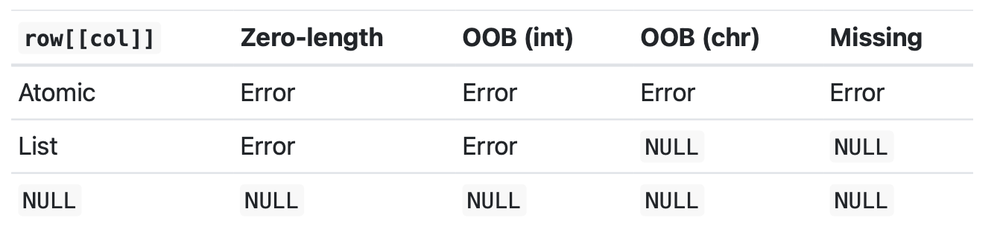

x <- c(2.1, 4.2, 3.3, 5.4)Chapter 4: Subsetting
1 Subsetting in R
1.1 Preliminary concepts
Subsetting allows you to pull out the pieces of an object you are interested in.
6 ways of subsetting atomic vectors
- Positive integers*
- Negative integers
- Logical vectors
- Nothing
- Zero
- Character vectors
(*Factors are not treated specially -subsetting uses the underlying integer vector)
3 operators:
- [
- [[
- $
Subsetting can be combined with assignment
⏩ OVERVIEW:
Subsetting multiple elements
Subsetting single elements
Subsetting with assignment
Further applications
1.2 Selecting multiple elements
1.2.1 Atomic Vectors
- With positive integers
# Return element at specified position
x[c(3, 1)][1] 3.3 2.1# Duplicate indices will duplicate values
x[c(1, 1)][1] 2.1 2.1# Real numbers are silently truncated to integers
x[c(2.1, 2.9)][1] 4.2 4.2- With negative integers
# To exclude elements at specified positions
x[-c(3, 1)][1] 4.2 5.4Note that they cannot be mixed with positive integers
- With logical vectors
# Return element where the corresponding logical value is TRUE
x[c(TRUE, TRUE, FALSE, FALSE)][1] 2.1 4.2When the logical vector contains a missing value (NA):
# Missing value in the index returns a missing value also in the output
x[c(TRUE, TRUE, NA, FALSE)][1] 2.1 4.2 NA
Note
Recycling rules: when you subset a vector using a vector of a different length, R recycles the shorter of the two to the length of the longer
x[c(TRUE, FALSE)][1] 2.1 3.3#Equivalent to
x[c(TRUE, FALSE, TRUE, FALSE)][1] 2.1 3.3- With nothing
More useful for 2D objects (e.g., data frames) than for 1D vectors
# Return the original vector
x[][1] 2.1 4.2 3.3 5.4- With character vectors
To be used with named vectors
#Return element with matching names
(y <- setNames(x, letters[1:4])) a b c d
2.1 4.2 3.3 5.4 y[c("a")] a
2.1 # Like integer indices, you can repeat indices
y[c("a", "a", "a")] a a a
2.1 2.1 2.1 When subsetting with [, names are always matched exactly..if no match, return NA
- With zero
#Returns a zero-length vector
x[0]numeric(0)1.2.2 Lists
same way as subsetting an atomic vector.
- [ always returns a list
- [[ and $ pull out elements of a list
1.2.3 Higher dimensional objects
3 ways of subsetting:
1. With multiple vectors
2. With single vector
3. With a matrix
Matrices (2D) and arrays (>2D)
Supply an index for each dimension separated by comma
a <- matrix(1:9, nrow = 3)
colnames(a) <- c("A", "B", "C")
a[1:2, ] A B C
[1,] 1 4 7
[2,] 2 5 8a[c(TRUE, FALSE, TRUE), c("B", "A")] B A
[1,] 4 1
[2,] 6 3a[0, -2] A CIn R, subsetting a matrix (or array) using a single vector of indices treats the matrix as if it were a one-dimensional vector in column-major order (i.e., column-wise order). This means it traverses the matrix column by column, rather than row by row.
vals <- outer(1:5, 1:5, FUN = "paste", sep = ",")
vals [,1] [,2] [,3] [,4] [,5]
[1,] "1,1" "1,2" "1,3" "1,4" "1,5"
[2,] "2,1" "2,2" "2,3" "2,4" "2,5"
[3,] "3,1" "3,2" "3,3" "3,4" "3,5"
[4,] "4,1" "4,2" "4,3" "4,4" "4,5"
[5,] "5,1" "5,2" "5,3" "5,4" "5,5"vals[c(4, 15)][1] "4,1" "5,3"You can also subset higher-dimensional data structures with an integer matrix
select <- matrix(ncol = 2, byrow = TRUE, c(1, 1, 3, 1,2, 4 ))
vals[select][1] "1,1" "3,1" "2,4"1.2.4 Data frames and tibbles
- When subsetting with a single index, they behave like lists and index the columns
- When subsetting with two indices, they behave like matrices
df <- data.frame(x = 1:3, y = 3:1, z = letters[1:3])
df[df$x == 2, ] x y z
2 2 2 bdf[c(1, 3), ] x y z
1 1 3 a
3 3 1 c# There are two ways to select columns from a data frame # Like a list
df[c("x", "z")] x z
1 1 a
2 2 b
3 3 c# Like a matrix df[, c("x", "z")]
df[, c("x", "z")] x z
1 1 a
2 2 b
3 3 c# There's an important difference if you select a single
# column: matrix subsetting simplifies by default, list
# subsetting does not.
str(df["x"])'data.frame': 3 obs. of 1 variable:
$ x: int 1 2 3str(df[, "x"]) int [1:3] 1 2 31.2.5 Dimensionality
Note
Dimensionality reduction: when you subset with [, [ simplifies the results to the lowest possible dimensionality.
#Both return a 1D vector
a[1, ]A B C
1 4 7 a[1, 1]A
1 To preserve the original dimensionality, you must use drop = FALSE
#Example with data frames
df <- data.frame(a = 1:2, b = 1:2)
str(df[, "a"]) int [1:2] 1 2str(df[, "a", drop = FALSE])'data.frame': 2 obs. of 1 variable:
$ a: int 1 2✳️ Why can ‘drop = TRUE’ by default be a problem?
- When you subset a 2D matrix or dataframe and the result has only one row or column, R simplifies the result to the lowest possible dimensionality --> from 2D df to 1D integer vector. This is a problem when e.g., you write a function that works on df (of 2D), but after subsetting it doesn’t work anymore -because the df became a 1D vector.
Factor subsetting also has a drop argument, but it controls whether or not levels are preserved, default is drop = FALSE
z <- factor(c("a", "b"))
z[1][1] a
Levels: a bz[1, drop = TRUE][1] a
Levels: a1.3 Selecting single elements
1.3.1 2 operators:
[[ extracts a single item
$ shortcut for x[[“y”]], commonly used to access var in df
[[ important when working with lists. As opposed to [ -which always return a smaller list- it extract the element itself.
Recommended for atomic vectors too when getting single value
x <- list(1:3, "a", 4:6)
# How to subset a single element?
# Etiher a list OR the content - this is the difference between [ and [[NOTE:
Because [[ can return only a single item, you must use it with either a single positive integer or a single string. If you use a vector with [[ , it will subset recursively, i.e. x[[c(1, 2)]] is equivalent to x[[1]][[2]] .
1.3.2 Useful comparisons between $ and [[:
❗ It is a mistake to use it when you have the col name stored in a variable
var <- "cyl" # Doesn't work - mtcars$var translated to mtcars[["var"]]
mtcars$varNULL# Instead use [[
mtcars[[var]] [1] 6 6 4 6 8 6 8 4 4 6 6 8 8 8 8 8 8 4 4 4 4 8 8 8 8 4 4 4 8 6 8 4❗ *
This is about how $ and [[ handle element names; e.g., useful whit named lists. The $ operator allows for partial matching of element names within a list or data frame. This means that if you provide an incomplete name that matches the beginning of a longer name, $ will still return a result. The [[ operator requires an exact match of the element name
x <- list(abc = 1)
x$a[1] 1x[["a"]]NULL# To avoid this behaviour set the global option warnPartialMatchDollar to TRUE
# Also, tibbles never do partial matching as opposed to df 1.3.3 Missing and out-of-bound indices
What happens with [[ when you use an “invalid” index?
You can get inconsistent results -it depends on the object you are subsetting and the index used

# When the element is missing an alternative is to rely on purrr
# purrr::pluck() -always returns NULL
# purrr::chuck() -always throw errorExamples:
- Zero-length object: This could be NULL or logical()
- Out-of-bounds values (OOB): Indices that exceed the length of the vector or list
- Missing values: Such as NA_integer_
1.3.4 @ and slot()
@: equivalent to $ for S4 objects
slot(): equivalent to [[ for S4 objects
1.4 Subsetting and assignment -Subassignment
Example of modifying elements of a vector
x <- 1:5
x[c(1, 2)] <- c(101, 102)
# recommend that you make sure that length(value) is the same as length(x[i]) , and that i is unique (R will recycle if needed and the rules can be complex)Example of removing element from a list
x <- list(a = 1, b = 2)
x[["b"]] <- NULL
str(x)List of 1
$ a: num 1# To add a literal NULL
y <- list(a = 1, b = 2)
y["b"] <- list(NULL)
str(y)List of 2
$ a: num 1
$ b: NULLSubsetting with nothing can be useful with assignment because it preserves the structure of the original object.
# here it's changing the content of mtcars
mtcars[] <- lapply(mtcars, as.integer)
is.data.frame(mtcars)[1] TRUE# here it's changing the object mtcars is bound to
mtcars <- lapply(mtcars, as.integer)
is.data.frame(mtcars)[1] FALSE1.5 Comparing speed and performance
library(data.table)Warning: package 'data.table' was built under R version 4.3.3library(tibble)
library(collapse)collapse 2.0.15, see ?`collapse-package` or ?`collapse-documentation`
Attaching package: 'collapse'The following object is masked from 'package:data.table':
fdroplevelsThe following object is masked from 'package:stats':
Dlibrary(microbenchmark)Warning: package 'microbenchmark' was built under R version 4.3.3library(highcharter)Warning: package 'highcharter' was built under R version 4.3.3Registered S3 method overwritten by 'quantmod':
method from
as.zoo.data.frame zoo size <- 1e5
df <- data.frame(
x = runif(size),
y = runif(size),
id = sample(letters, size, replace = TRUE)
)
dt <- as.data.table(df)
tb <- as_tibble(df)
lst <- list(x = runif(size),
y = runif(size),
id = sample(letters, size, replace = TRUE))
# Benchmarking various subsetting operations
bench <- microbenchmark::microbenchmark(
times = 100,
# Base R subsetting for data.frame
df_base = {
df[df$x > 0.5 & df$y < 0.5, ]
},
# Base R subsetting for data.table
dt_base = {
dt[dt$x > 0.5 & dt$y < 0.5]
},
# Base R subsetting for tibble
tb_base = {
tb[tb$x > 0.5 & tb$y < 0.5, ]
},
# Using collapse package with data.frame
df_clp = {
df |> fsubset(x > 0.5 & y < 0.5)
},
# Using collapse package with data.table
dt_clp = {
dt |> fsubset(x > 0.5 & y < 0.5)
},
# Using collapse package with tibble
tb_clp = {
tb |> fsubset(x > 0.5 & y < 0.5)
},
# Using data.table package with data.table
dt_dt = {
dt[x > 0.5 & y < 0.5]
}
# Subsetting lists using base R
)
if (requireNamespace("highcharter")) {
hc_dt <- highcharter::data_to_boxplot(bench,
time,
expr,
add_outliers = FALSE,
name = "Time in milliseconds")
highcharter::highchart() |>
highcharter::hc_xAxis(type = "category") |>
highcharter::hc_chart(inverted = TRUE) |>
highcharter::hc_add_series_list(hc_dt)
} else {
boxplot(bench, outline = FALSE)
}1.5.1 Boolean algebra vs sets (i.e., logical vs integer subsetting)
Note
Using set operations is more effective when:
You want to find the first (or last) TRUE
You have very few TRUE s and very many FALSE s; a set representation may be faster and require less storage.
Why:
Sets or indices allow direct access to specific positions, making it faster to locate the first or last TRUE value. Operations designed to find the first TRUE can exit early once the condition is met, avoiding unnecessary computations.
note:: which() allows you to convert a Boolean representation to an integer representation
(x1 <- 1:10 %% 2 == 0) [1] FALSE TRUE FALSE TRUE FALSE TRUE FALSE TRUE FALSE TRUE(x2 <- which(x1))[1] 2 4 6 8 10(y1 <- 1:10 %% 5 == 0) [1] FALSE FALSE FALSE FALSE TRUE FALSE FALSE FALSE FALSE TRUE(y2 <- which(y1))[1] 5 10x1 & y1 [1] FALSE FALSE FALSE FALSE FALSE FALSE FALSE FALSE FALSE TRUEintersect(x2, y2)[1] 10x1 | y1 [1] FALSE TRUE FALSE TRUE TRUE TRUE FALSE TRUE FALSE TRUEunion(x2, y2)[1] 2 4 6 8 10 5x1 & !y1 [1] FALSE TRUE FALSE TRUE FALSE TRUE FALSE TRUE FALSE FALSEsetdiff(x2, y2)[1] 2 4 6 8xor(x1, y1) [1] FALSE TRUE FALSE TRUE TRUE TRUE FALSE TRUE FALSE FALSEsetdiff(union(x2, y2), intersect(x2, y2))[1] 2 4 6 8 5Common mistake is to use x[which(y)] instead of x[y] -result is exactly the same but 2 differences:
When the logical vector contains NA , logical subsetting replaces these values with NA while which() drops these values
x[-which(y)] is not equivalent to x[!y] : if y is all FALSE, which(y) will be integer(0) and -integer(0) is still integer(0) , so you’ll get no values, instead of all values.
In general, avoid switching from logical to integer subsetting unless you want, for example, the first or last TRUE value.
More Examples to compare performance:
# Large logical vector
vec <- sample(c(TRUE, FALSE), size = 1e6, replace = TRUE)
# integer subsetting to find the first TRUE
first_true_base <- which(vec)[1]
# logical subsetting
first_true_set <- match(TRUE, vec)
#match(TRUE, vec) can be faster because it stops as soon as it finds the first TRUE, whereas which(vec)[1] computes all TRUE indices first and then selects the first one.When a dataset has very few TRUE values (sparse data) and many FALSE values, using set representations can be more efficient both in terms of speed and memory. Indices represent the positions of TRUE values, saving memory by not storing the FALSE values. Operations on sets typically faster because they involve fewer elements.
# Sparse logical vector
vec <- rep(FALSE, 1e6)
vec[sample(1:1e6, 10)] <- TRUE # Only 10 TRUE values
# logical
subset_base <- vec[vec == TRUE]
# integer
true_indices <- which(vec)
subset_set <- vec[true_indices]library(data.table)
library(tibble)
library(collapse)
library(microbenchmark)
library(highcharter)
# Set the size for the test data
size <- 1e5
# Create a data frame and convert it to data.table and tibble
df <- data.frame(
x = runif(size),
y = runif(size),
id = sample(letters, size, replace = TRUE)
)
dt <- as.data.table(df)
tb <- as_tibble(df)
# Logical vector with sparse TRUE values
logical_vector <- rep(FALSE, size)
logical_vector[sample(1:size, 100)] <- TRUE # Only 100 TRUE values
# Benchmarking logical vs integer subsetting
bench <- microbenchmark::microbenchmark(
times = 100,
# Logical subsetting for data.frame
df_logical = {
df[logical_vector, ]
},
# Integer subsetting for data.frame
df_integer = {
df[which(logical_vector), ]
},
# Logical subsetting for data.table
dt_logical = {
dt[logical_vector]
},
# Integer subsetting for data.table
dt_integer = {
dt[which(logical_vector)]
},
# Logical subsetting for tibble
tb_logical = {
tb[logical_vector, ]
},
# Integer subsetting for tibble
tb_integer = {
tb[which(logical_vector), ]
}
)
# Visualization using highcharter
if (requireNamespace("highcharter", quietly = TRUE)) {
hc_dt <- highcharter::data_to_boxplot(bench,
time,
expr,
add_outliers = FALSE,
name = "Time in milliseconds")
highcharter::highchart() |>
highcharter::hc_xAxis(type = "category") |>
highcharter::hc_chart(inverted = TRUE) |>
highcharter::hc_add_series_list(hc_dt)
} else {
boxplot(bench, outline = FALSE, main = "Logical vs Integer Subsetting Performance", ylab = "Time (milliseconds)", las = 2)
}1.6 Subsetting - Some applications
1.6.1 Character subsetting
1.6.1.1 Lookup tables
These are usually named vectors or lists, useful when you want to map values from one object to another. For example,
x <- c("m", "f", "u", "f", "f", "m", "m")
lookup <- c(m = "Male", f = "Female", u = NA)
lookup[x] m f u f f m m
"Male" "Female" NA "Female" "Female" "Male" "Male" #Can use unname() if you don't want names in the result
unname(lookup[x])[1] "Male" "Female" NA "Female" "Female" "Male" "Male" 1.6.1.2 Removing columns from data frames
There are two ways of removing columns:
# Option 1 - Set it to NULL
df <- data.frame(x = 1:3, y = 3:1, z = letters[1:3])
df$z <- NULL
# Option 2 - Subset the columns you want
df <- data.frame(x = 1:3, y = 3:1, z = letters[1:3])
df[c("x", "y")] x y
1 1 3
2 2 2
3 3 1If you only know the columns you do not want (e.g., “z”):
df[setdiff(names(df), "z")] x y
1 1 3
2 2 2
3 3 11.6.2 Integer subsetting
1.6.2.1 Lookup tables - matching by hand
Suppose you have a more complex lookup table, i.e., with multiple columns of information.
For example, suppose you have a vector of integer grades and a table that describes their property:
grades <- c(1, 2, 2, 3, 1)
info <- data.frame(
grade = 3:1,
desc = c("Excellent", "Good", "Poor"),
fail = c(F, F, T)
)say we want to have a row for each value in grades. A way to do this is by combining match() and integer subsetting
id <- match(grades, info$grade)
#return position where each grade is found in info$grade
id[1] 3 2 2 1 3info[id, ] grade desc fail
3 1 Poor TRUE
2 2 Good FALSE
2.1 2 Good FALSE
1 3 Excellent FALSE
3.1 1 Poor TRUE1.6.2.2 Random samples
You can use integer indices to randomly sample a vector or data frame.
# use sample(n) to generate a random permutation of 1:n
df <- data.frame(x = c(1, 2, 3, 1, 2), y = 5:1, z = letters[1:5])
# Randomly reorder
df[sample(nrow(df)), ] x y z
2 2 4 b
4 1 2 d
3 3 3 c
1 1 5 a
5 2 1 e# Select 3 random rows
df[sample(nrow(df), 3), ] x y z
4 1 2 d
1 1 5 a
3 3 3 c# Select 6 bootstrap replicates
df[sample(nrow(df), 6, replace = TRUE), ] x y z
5 2 1 e
4 1 2 d
3 3 3 c
4.1 1 2 d
4.2 1 2 d
3.1 3 3 c1.6.2.3 Ordering
order() takes a vector as its input and returns an integer vector describing how to order the subsetted vector
x <- c("b", "c", "a")
order(x)[1] 3 1 2x[order(x)][1] "a" "b" "c"# can also change the order from ascending to descending by using decreasing = TRUE
order(x, decreasing = TRUE)[1] 2 1 3x[order(x, decreasing = TRUE)][1] "c" "b" "a"x <- c("b", NA, "c", "a")
order(x)[1] 4 1 3 2x[order(x)][1] "a" "b" "c" NA # missing values will be put at the end of the vector
# you can remove them with na.last = NA
x[order(x, na.last = NA)][1] "a" "b" "c"# or you can put them at the front
x[order(x, na.last = FALSE)][1] NA "a" "b" "c"For two or more dimensions, order() and integer subsetting makes it easy to order either the rows or columns of an object:
df2 <- df[sample(nrow(df)), 3:1]
df2 z y x
4 d 2 1
5 e 1 2
2 b 4 2
1 a 5 1
3 c 3 3# order rows
df2[order(df2$x), ] z y x
4 d 2 1
1 a 5 1
5 e 1 2
2 b 4 2
3 c 3 3# order cols
df2[, order(names(df2))] x y z
4 1 2 d
5 2 1 e
2 2 4 b
1 1 5 a
3 3 3 c